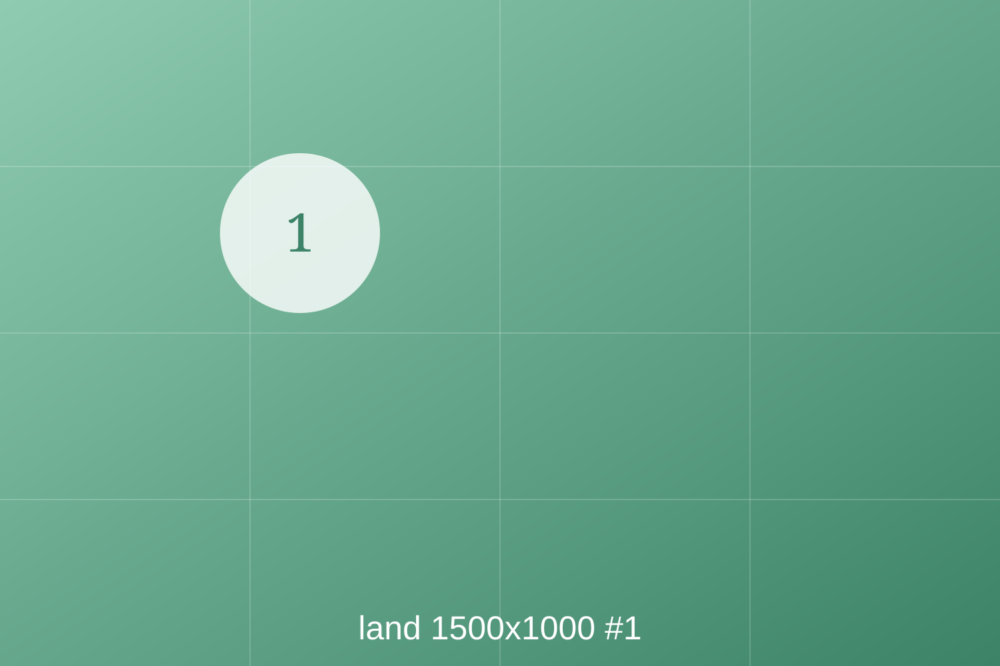
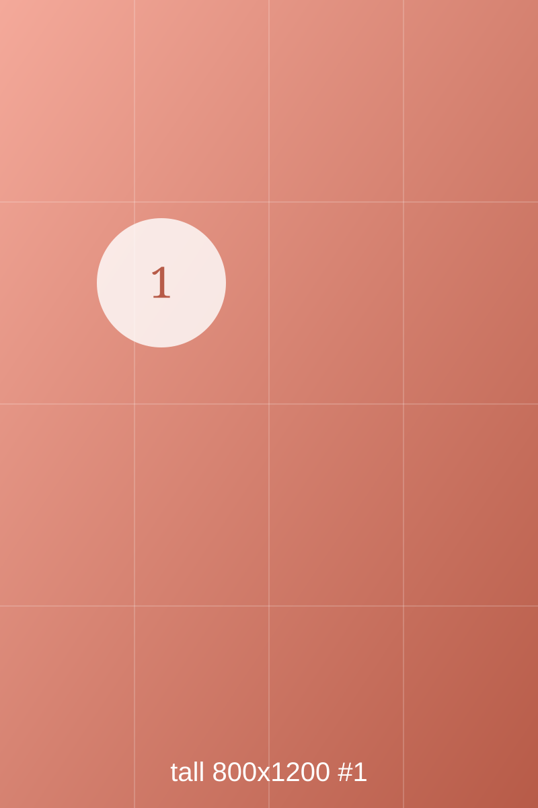
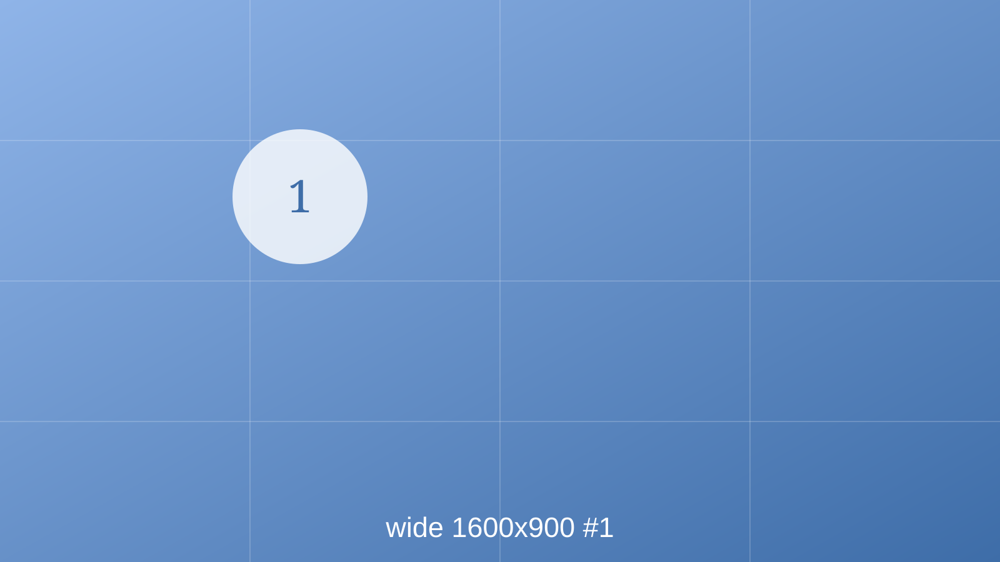
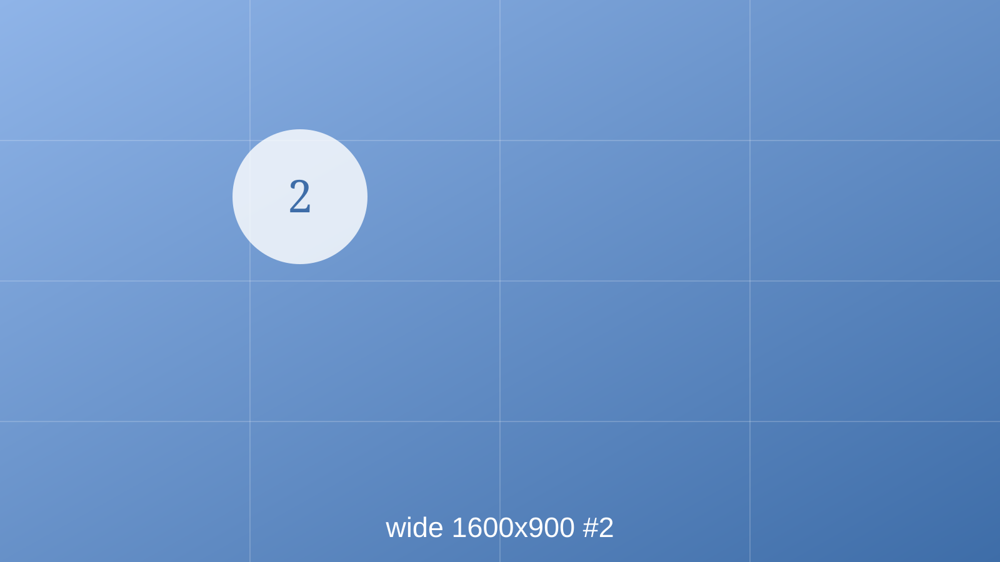
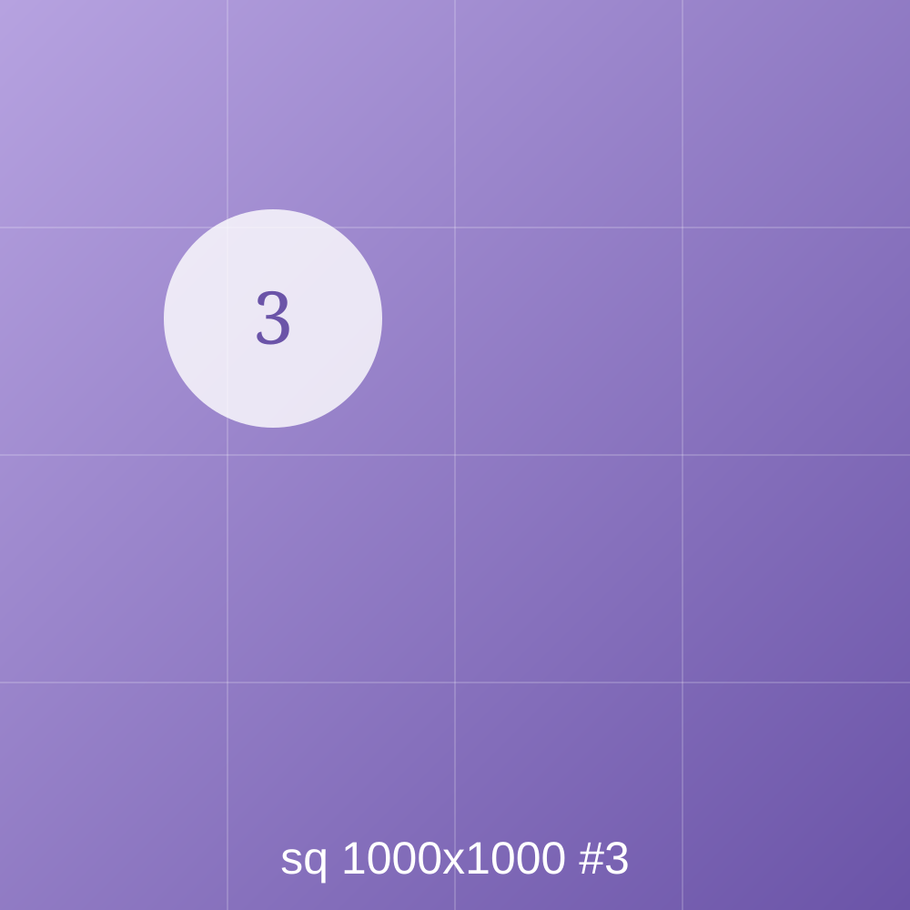

¿Verdadero o falso?
Necesitan tierra.
Una lámpara sirve.
¿Cuántas semillas hay?
First, say a number that is surely too low.
¿Dónde va cada fracción?
¿Qué ancho da el corral más grande?
¿Cuál no pertenece?



Photographs: Wikimedia Commons · CC BY-SA 4.0
Une cada palabra con su foto.

Photographs: Wikimedia Commons · CC BY-SA 4.0
¿Qué tan lleno está el tanque?
¿Dónde va la bomba?
Talk first: what is your guess?
Ordena la vida de la planta.

Photographs: Wikimedia Commons · CC BY-SA 4.0
¿Cuánta agua hay?
¿Qué puede ser?
Ordena todos los pasos.
Come up two at a time.
Pasen de dos en dos.
¿Cuántos litros bebe una lechuga de campo?
¿Cuánta agua usa cada granja?
¿Dónde espera el agua?
¿Verdadero o falso?
La bomba va en el agua.
Más agua siempre es mejor.